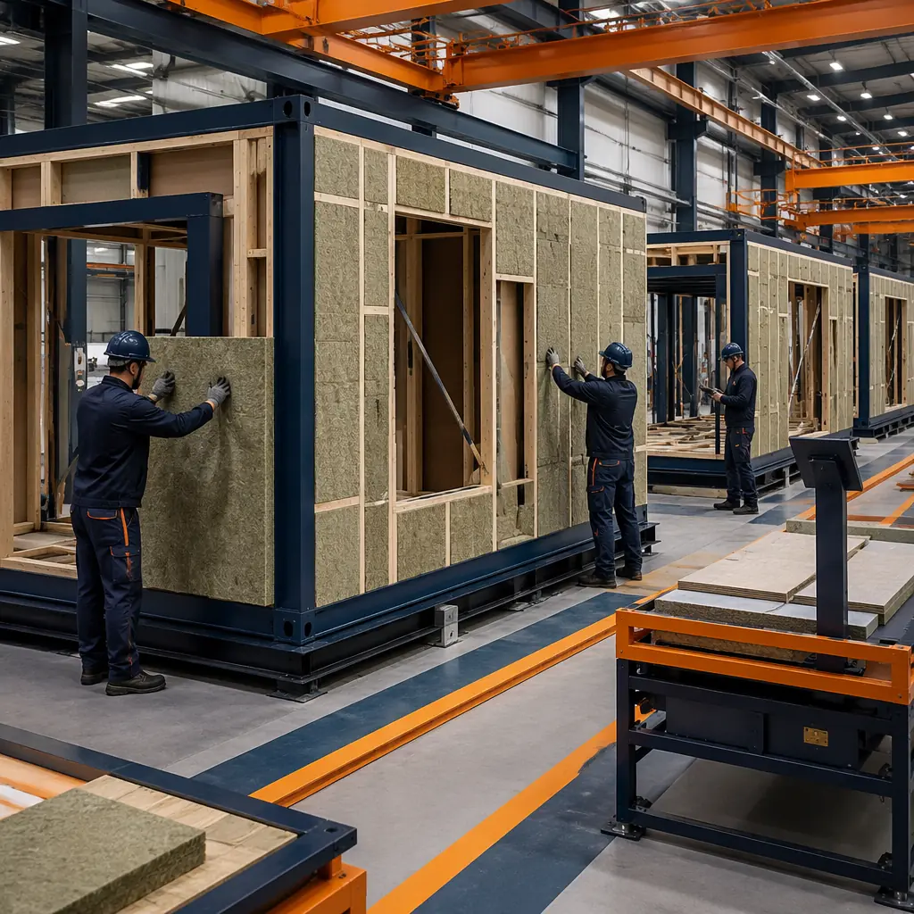
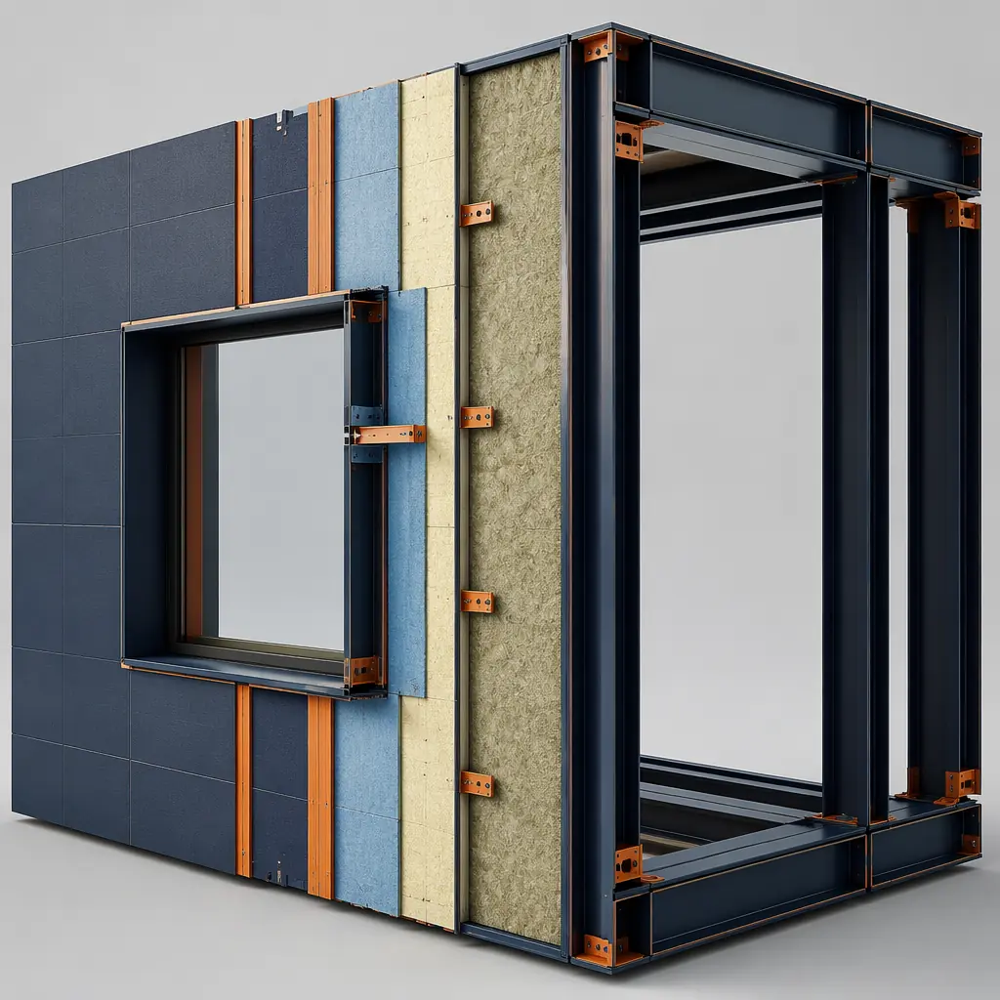
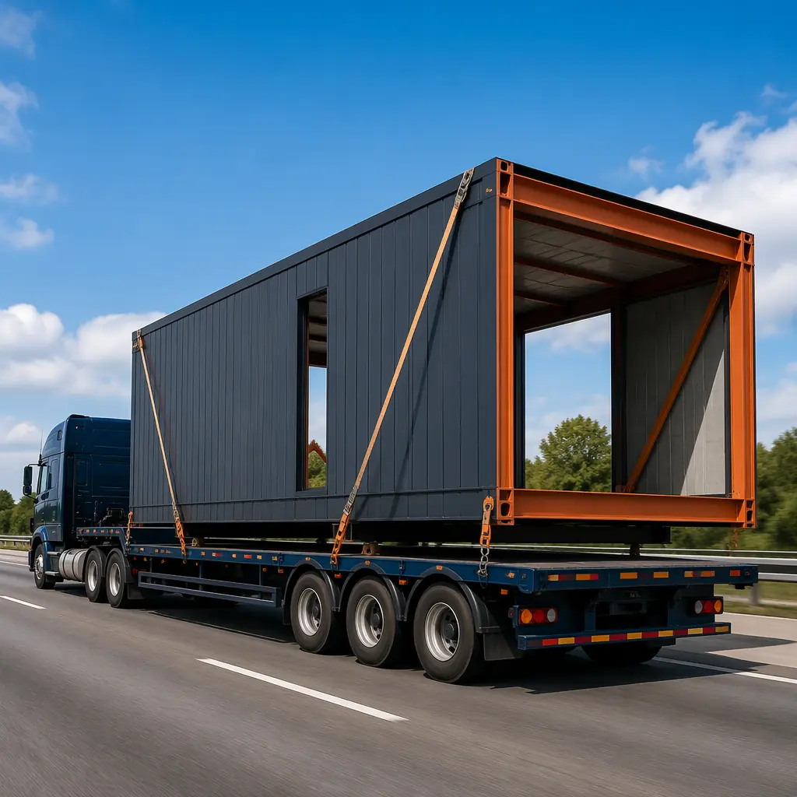
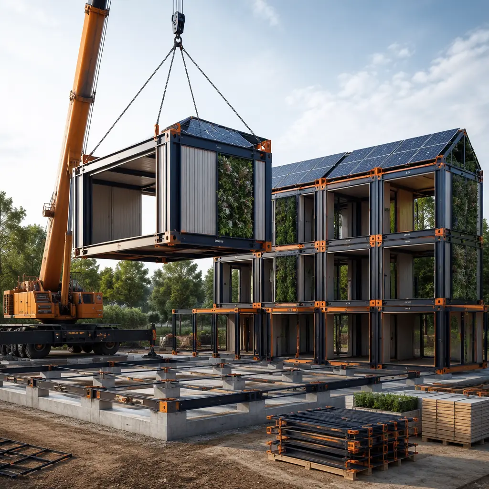

LEED (Leadership in Energy and Environmental Design) has certified over 110,000 commercial projects across 185 countries, and the program's evolution from v4.1 to v5 — effective January 2025 — introduces new embodied carbon requirements, whole-building life cycle assessment mandates, and stricter construction waste diversion thresholds that fundamentally change the green building certification landscape. For developers accustomed to site-built construction, these tighter standards add cost and complexity. For modular prefabricated construction, they amplify an inherent advantage: the factory environment that makes modules faster to build also makes them systematically easier to certify. A 2024 study by the Modular Building Institute found that modular projects achieve LEED certification with an average of 4.2 fewer administrative hours per credit compared to equivalent site-built projects, and 68% of modular projects pursuing LEED Silver or higher achieved their target certification level on the first submission — versus 47% for site-built comparables.

Why LEED Credits Come Faster in a Factory
The core structural advantage of modular construction for LEED certification is straightforward: a climate-controlled factory with standardized processes, digital quality records, and a stable workforce produces documentation that is inherently more consistent, auditable, and complete than anything generated across 12-18 months of weather-exposed, multi-subcontractor site work. This isn't theoretical — it's grounded in the mechanics of how USGBC reviewers evaluate credit submissions:
- Single-point quality control replaces multi-trade fragmentation: A traditional site-built office structure involves 15-25 separate subcontractors, each responsible for documenting their portion of materials sourcing, waste handling, and installation verification. The general contractor must aggregate these records into a coherent LEED submission — a process that typically uncovers documentation gaps requiring 2-3 rounds of follow-up with subcontractors who have already been paid and moved on. In a modular factory, one quality management system — typically ISO 9001 certified — tracks every material lot, every waste stream, and every installation verification point from procurement through final inspection. The audit trail is complete by design, not assembled retroactively.
- Factory waste streams are pre-segregated at point of generation: On a construction site, waste separation requires active management across dozens of trades, weather conditions, and tight schedules — the practical result is that 65-75% of site construction waste ends up in mixed C&D dumpsters despite stated recycling targets. Modular factories install dedicated waste streams at each workstation: steel offcuts go directly to the recycling bin, gypsum to gypsum recovery, wood to biomass, packaging to cardboard recycling. No weather, no schedule pressure, no contamination between streams. This is why modular factories routinely achieve 85-95% construction waste diversion — well above the 75% threshold for LEED's Construction Waste Management credit (MRc5 under v4.1, MR Prerequisite: Construction and Demolition Waste Management under v5).
- Indoor air quality is verified before occupancy, not during: Site-built projects pursuing LEED's Indoor Environmental Quality credits must manage construction IAQ during the build — protecting ductwork from contamination, controlling humidity during drywall installation, and performing a building flush-out before occupancy. These sequential dependencies are fragile: a single rain event during the roof-installation-to-drywall window can introduce moisture that compromises the entire IAQ plan. Modular modules are enclosed in the factory within 72 hours of framing, maintaining a controlled interior environment throughout finishing. IAQ verification can be performed on individual modules at the factory — before they ever reach the site — using calibrated sensors that generate auditable data logs for every square foot of interior space.

LEED Credits Where Modular Construction Has a Documented Advantage
Not all LEED credits are equally accessible to modular construction. The credits that benefit most are those where the factory environment changes the fundamental physics of quality control, waste management, or material verification. Based on certification data from 42 LEED-certified modular projects across the US and Canada (2022-2025), these are the credits where modular construction consistently outperforms site-built alternatives:
Materials & Resources: Construction Waste Diversion (MRc5 / v5 MR Prerequisite)
This is modular construction's strongest single LEED credit — and it's no longer optional under LEED v5, which elevates construction waste management from an optional credit to a mandatory prerequisite requiring minimum 75% diversion. Modular factories achieve this by structural design, not by heroic on-site effort. A typical 80,000 sq ft modular apartment building generates approximately 120 tons of factory waste — and diverts 90-105 tons (75-87%) through pre-segregated recycling streams. The equivalent site-built project generates 280-350 tons of waste with typical diversion rates of 55-65% — leaving 100-125 tons destined for landfill versus 15-30 tons from the modular factory. The documentation burden is also lower: factory waste manifests are generated continuously by the facility's ERP system as part of standard operations, while site-built projects must manually aggregate haul tickets from multiple waste contractors across the entire construction duration.
Energy & Atmosphere: Enhanced Commissioning (EAc1)
Enhanced commissioning requires third-party verification that building systems — HVAC, lighting, domestic hot water, renewable energy, and building envelope — perform as designed. For modular construction, the building envelope commissioning process is dramatically simplified: thermal imaging, blower door testing, and envelope leakage verification can be performed on individual modules at the factory using standardized test protocols. A module that passes factory envelope testing with 0.15 CFM50/sq ft leakage (well within Passive House territory) will perform identically on site — because the critical envelope details (air barrier continuity, insulation installation quality, window flashing) were completed in a controlled environment. Site-built envelope commissioning, by contrast, must verify these details after 6-12 months of weather exposure during which insulation may have been compressed, air barriers punctured, and flashing compromised. MODURA's factory envelope testing program — implemented across all 4 ISO 9001/14001 certified factories — has reduced commissioning deficiency resolution time by an average of 11 days compared to site-built comparables in our project portfolio, consistent with the faster commissioning timelines we've documented in our comprehensive ROI analysis.
Indoor Environmental Quality: Low-Emitting Materials (EQc2)
LEED v4.1 requires that interior paints, coatings, adhesives, sealants, flooring, and composite wood meet VOC emission thresholds defined by CDPH Standard Method v1.2. For site-built projects, this means the general contractor must collect VOC compliance documentation from 8-12 separate material suppliers and installers — a paperwork exercise that generates an average of 60-80 pages of product data sheets and certifications per project. Modular construction's advantage is procurement consolidation: the factory purchases interior finish materials in bulk from a small number of pre-qualified suppliers who provide consolidated VOC compliance documentation covering entire production runs. One compliance package covers every module in the building — 5-8 pages instead of 60-80. For developers pursuing LEED Gold or Platinum — where every credit matters and documentation quality distinguishes successful from unsuccessful submissions — this consolidation is worth approximately 1.5-2 points of reduced submission risk.

LEED v5: What Changes for Modular Construction in 2026
LEED v5 — launched January 2025 with a mandatory transition deadline of January 2027 for all newly registered projects — introduces three structural changes that shift the certification landscape further toward modular construction's strengths:
- Embodied carbon assessment becomes mandatory: LEED v5 requires a whole-building life cycle assessment (WBLCA) demonstrating a minimum 10% reduction in global warming potential across three of six impact categories compared to a baseline building. For site-built projects, this requires assembling material quantity data from dozens of suppliers after construction is complete — a process that took 40-80 hours per project under the optional v4.1 credit. Modular factories, by contrast, have precise material quantity data in their ERP systems: every pound of steel, every sheet of gypsum, every gallon of paint is tracked from purchase order to installation. A modular project's WBLCA can be generated from factory production data in approximately 8-12 hours — an 80% reduction in documentation effort.
- Construction waste diversion becomes a prerequisite, not a credit: As noted above, LEED v5's mandatory 75% diversion threshold eliminates the lowest-performing construction methods from certification eligibility entirely. Site-built projects that historically achieved 55-65% diversion will need to invest in on-site waste segregation infrastructure — adding $0.25-0.50/sq ft to construction costs — just to qualify for LEED registration. Modular factories already operate above this threshold as a standard manufacturing practice, requiring no incremental investment.
- Social equity evaluation framework added: LEED v5 introduces a new Social Equity credit category assessing construction workforce practices including prevailing wage compliance, apprenticeship program participation, and workforce diversity. Modular construction's factory workforce — stable, year-round employees with benefits, training programs, and career progression — scores systematically higher on these metrics than the project-based, seasonal site construction workforce. While the credit is optional in the initial v5 rollout, USGBC has signaled that elements of the social equity framework will become prerequisites in future v5 updates, potentially creating a structural barrier for construction methods that rely on temporary, project-specific labor pools.
These changes represent a meaningful shift in the economics of LEED certification. A developer choosing between modular and site-built construction for a project registering under LEED v5 after January 2027 will face a certification cost differential of approximately $15,000-25,000 in additional consulting and documentation fees for the site-built option — driven primarily by the mandatory WBLCA and waste diversion prerequisite. As we explored in our analysis of sustainable modular construction, the operational carbon advantages of factory production compound with these certification economics to make modular the default choice for any project where third-party verified sustainability credentials add value to the asset.

LEED Certification Level: What Modular Construction Can Achieve
The LEED certification level a modular project can achieve depends on the base building program and the developer's investment in additional sustainability measures — but the factory advantage provides a consistently higher floor than site-built alternatives. Based on point tally analysis across MODURA's project portfolio and industry benchmarking data, here's what modular construction delivers at each certification tier:
| Certification Level | Points Required | Modular Baseline (Factory Alone) | Additional Investment Needed |
|---|---|---|---|
| Certified | 40-49 | 43-47 points | None — achievable through factory processes alone |
| Silver | 50-59 | 43-47 points | $1.50-2.50/sq ft: enhanced HVAC, low-flow fixtures, renewable energy feasibility |
| Gold | 60-79 | 43-47 points | $3.50-6.00/sq ft: solar PV, advanced MEP, enhanced commissioning, green power purchase |
| Platinum | 80+ | 43-47 points | $8.00-12.00/sq ft: net-zero energy, comprehensive renewables, innovation credits |
The key insight is that modular construction's factory processes alone deliver roughly 43-47 points — placing every modular project within striking distance of LEED Certified (40+) without any incremental sustainability investment beyond what the factory already provides. Site-built projects, by contrast, typically start at 32-38 points from standard construction practices — requiring $2.00-4.00/sq ft in additional investment to reach the 40-point threshold. This 8-12 point structural advantage is worth approximately $120,000-360,000 in avoided sustainability investment on a typical 100,000 sq ft project. For developers considering modular construction for projects like commercial office buildings or healthcare facilities — where sustainability credentials directly influence tenant attraction and institutional investor interest — this certification cost advantage compounds with the schedule acceleration benefits that modular construction already provides.

The Documentation Timeline: Modular vs. Traditional LEED Submissions
Beyond the credit-by-credit advantages, the overall LEED documentation process for modular construction is faster, less expensive, and more predictable. A typical 80,000-120,000 sq ft mid-rise building pursuing LEED Silver requires the following documentation effort:
| Documentation Phase | Site-Built (Hours) | Modular (Hours) | Time Savings |
|---|---|---|---|
| Materials & Resources credits | 120-160 | 40-55 | −65% |
| Indoor Environmental Quality credits | 80-110 | 35-50 | −55% |
| Energy & Atmosphere credits | 90-130 | 60-85 | −35% |
| LEED consultant fees | $18,000-28,000 | $10,000-16,000 | −40-45% |
| Total documentation hours | 290-400 | 135-190 | −53% |
These efficiency gains compound when applied across a multi-building development program — a scenario where modular construction's factory learning curve and standardized quality documentation create additional economies of scale. For a developer planning a 5-building apartment portfolio, the LEED documentation cost for buildings 2 through 5 drops an additional 25-35% from the first building's baseline because the credit templates, supplier documentation, and submission narrative are substantially reusable. This portfolio-scale efficiency has no equivalent in site-built construction, where every new project site introduces new subcontractors, new material suppliers, and new documentation gaps that must be bridged from scratch. Compared to traditional construction methods, the LEED certification advantage represents real dollars that compound across every building in a developer's pipeline.
Getting Started: LEED Certification with MODURA
For developers who have never pursued LEED certification and want to understand whether modular construction makes certification viable for their project, the starting point is straightforward: define your certification ambition early — ideally during schematic design — and engage a LEED consultant who has experience with modular construction documentation. The factory's quality management system (QMS) is the single most valuable LEED documentation asset in the project, and a consultant who understands how to map QMS data to USGBC credit forms will achieve those 53% documentation time savings.
MODURA supports LEED certification through every project phase: our preconstruction team provides preliminary credit feasibility analysis during site evaluation, our factory QMS — certified to ISO 9001 and ISO 14001 — generates LEED-ready material traceability, waste diversion, and IAQ verification documentation as a standard deliverable on every project, and our commissioning support team coordinates the building envelope, MEP, and renewable energy verification processes directly with your third-party commissioning agent. Across our 500+ completed projects in 18 countries, modular construction has consistently demonstrated that speed to market and sustainability certification are complementary goals, not competing priorities. Contact our sustainability team for a free LEED feasibility assessment including credit-by-credit point estimate, documentation timeline, and certification cost analysis for your specific project type and target certification level.